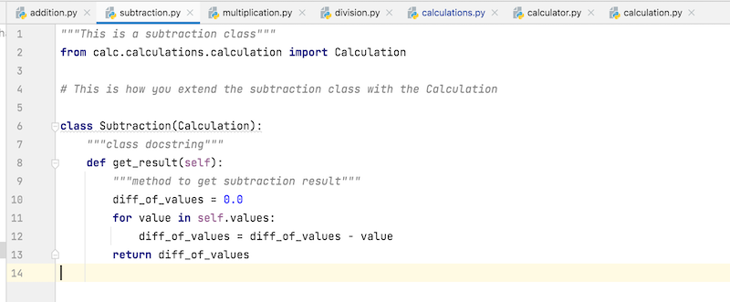

The calculator program uses many of the OOP principles.
1. Abstraction: In our calculator.py class we have four methods add_numbers, subtract_numbers, multiply_numbers and divide_numbers which are being implemented and used. However, we only have the method skeleton there, but we don't show the implementation of each of these methods, which is being done in each of the methods separate classes through the calculations.py class

2. Inheritance: In our calculator, the calculator.py class inherits the "add_addition_calculation" method from the calculations.py class, so we need not redefine the method again. we can simply invoke the method in the child class which is the calculator.py class as seen below.

3. Encapsulation: As we can see, the subclass, "calculator.py" implements "calculations.py" method named get_last_calculation_result_value() but it needs to be invoked by specifying the superclass name before invoking the method as shown in pic below. By this method, the calculator.py class can also access a possible private variable from calculations.py class.

4. Polymorphism: Addition.py , Subtraction.py, Multiplication.py & Division.py use the same get_result() method to return the values after performing their respective operations. All classes have the same method name but they are performing different operation. This is a classic example of Polymorphism.


- Encapsulation
- Abstraction
- Inheritance
- Polymorphism
To prevent accidental change, an object’s variable can only be changed by an object’s method. Those types of variables are known as private variables. A class is an example of encapsulation as it encapsulates all the data that is member functions, variables, etc.
- It represents real-world relationships well.
- It provides the reusability of a code. We don’t have to write the same code again and again. Also, it allows us to add more features to a class without modifying it.
- It is transitive in nature, which means that if class B inherits from another class A, then all the subclasses of B would automatically inherit from class A.